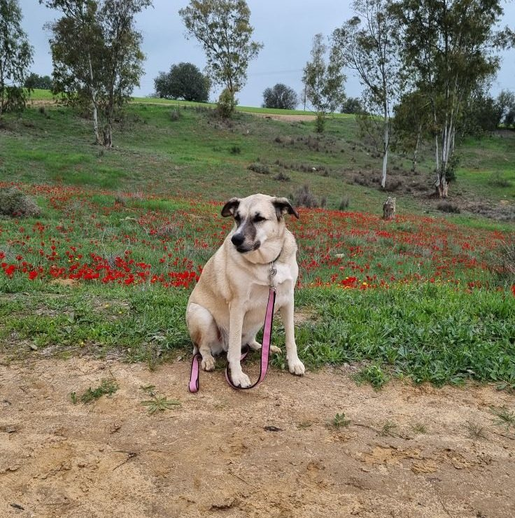

טבעוני בישראל
מפה אינטראקטיבית של מסעדות וחנויות טבעוניות בישראל + רעיונות למסלולים קצרים לטיול.
עדכון נתונים אחרון: 2026-02-14
📍 מפה
🌿 100% טבעוני
🧭 מסלולים
מפה ורשימת מקומות
חיפוש + סינון מהיר, ואז ניווט במפה או ברשימה. במובייל: עוברים בין רשימה/מפה בכפתורים.
נמצאו 0 מקומות
יש לכם מקום להוסיף?
שלחו לי שם + עיר + לינק (אינסטגרם/אתר) ואוסיף למפה. הכי חשוב: 100% טבעוני בלבד.
טיפ: במובייל, לחצו “הצג במפה” בכרטיס — ונעבור אוטומטית לתצוגת מפה.
מסלולים מומלצים
רעיונות מהירים לסופ״ש/יום טיול. (תמיד מומלץ לבדוק שעות ולקבוע מקום מראש.)
סופ״ש טבעוני בתל אביב
- בוקר: בראנץ׳ ב־Anastasia
- צהריים: שופינג ב־מרקט טבעוני דיזינגוף
- ערב: חוויה מיוחדת ב־Opa (הזמנה מראש)
יום טעים בנמל
- צהריים: J17 – מנות מנחמות
- אחר הצהריים: טיול על הטיילת + קפה
- ערב: Goodness כשבא משהו מהיר
קפיצה לצפון
- חיפה: Hummus BAR (טבעוני)
- פרדס חנה-כרכור: Yamima (שווארמה סייטן)
- לסיים בקפה/שוק מקומי